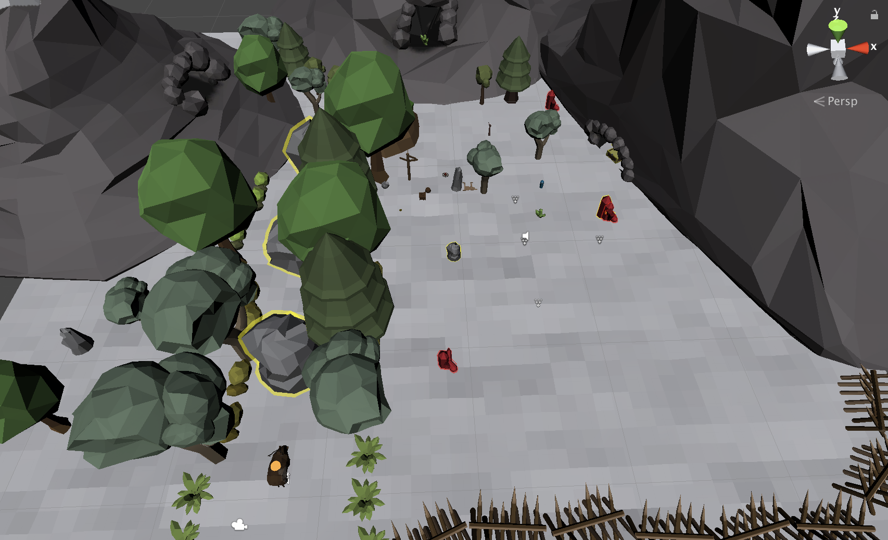

My initial idea is a top-view coop boss fighting game, kind of like Titan Souls. The control is kind of like The binding of Issac. And in the coop mode, the player need to avoid the attacking from both the boss and the other player.
Then we go to the idea of shape shifting. The idea is from the tale of druid. The background is the forest. The character can transform to different animals to solve the puzzle. And finally, our idea is to build a story-based adventure game and the core gameplay is transforming. But I am a little worried about the fun of our game.
I am playing Hollow Knight recently. And I am so impressed by the atomsphere and story of it. So I want to write a story with a dark kernal and maybe a bad ending.
Character
Openning
One snowy night, a girl woke up from a strange dream. She felt someone was calling her. When she went out, she found everyone except her was falling into a deep sleep and couldn’t be waken up. Then She saw a white thing disappeared at the entrance of the forest. So she stepped into the forest to see what’s going on…
Then I fulfilled the story.
Long long ago, Louhi was defeated by a hero and sealed inside the hero. Animals guarded this seal. But the seal became weaker and weaker... One snowy night, a girl woke up from a strange dream. She felt someone was calling her. When she went out, she found everyone except her was falling into a deep sleep and couldn’t be waken up. Then She saw a white thing disappeared at the entrance of the forest. So she stepped into the forest to see what’s going on… She saw some soul fragments in the forest. These soul fragments were from the death of animals. After she collected several fragments, a soul of an old huge bear appeared and told her the use of souls. Then she collected and used these fragments. Finally she was in the center of the forest and heard the whispering of the hero. The hero asked the girl to break the seal and he would seal it again. The girl broke the seal but the hero’s soul run out of power and disappeared. The girl sealed Louhi inside her.
We start developing based on a low-poly 3D game kit. And I am working on the transforming part.
The basic idea is to use another gameobject to control the transform. The player is the parent object and is used to save current position. And the different characters are the children object. When a new character is called, destroy the old character, instantiate the new character and set the position.
Bug 1: The character falls through the ground
The reason is that the collider of the character intersects with the ground. So we change the position and the size of the collider. But it doesn't work. When I change to the second character, I notice the y-position is so low. Then I change the position of the object. Problem Solved!
And we should remember that the character controller contains a capsule collider.
Bug 2: The collision between character and pick-ups
Character controller doesn't have OnCollisionEnter(). So we use OnControllerColliderHit(). But this method has another problem. It invokes several times when the character walks over a pick-up. Then we move the scripts from the character to the pick-up. And I set the pick-up's colloder as trigger. Also BE AWARE OF the capital of the function name: OnTriggerEnter(). Then everything works well.
Dialogue system
At first, I thought dialogue system was difficult. But then I found a 15 minutes youtube video that taught me how to make it. I created a mDialogue class that has NPC name, and serializable String sentences. Then I added a DialogueManager to the scene that controls the behavior. When a dialogue is triggered, the sentences was put in a queue and popped one by one to substitute the text in the dialogue UI. And the trigger is set with different conditions, like colliders or specific forms.
Then I met with a problem that the NPC had different dialogues in different conditions. So I added a int statue to the GameObject that stores the states of each NPC.
In most Metroidvania games, the player can access different parts of the same level by unlocking different abilities. It's interesting and users will be glad to find the secrets. But considering the time and difficulty to design such a level, we unlocked all the abilities after the tutorial.
I started from the player's ablitiy, charge and push. Design starts from greybox. First, I designed the path and environment of this level. Then I tried to add some puzzles on the path. I drew something on a paper. The player needed to charge to break some rocks. Then she found a small stone and pushed the stone close to a small hill. She used this hill to jump on the hill and entered the second parts of this level. In this part, the player had to push 4 objects to specific places. There were 2 small objects and a big one. The big one can break into two small objects. Then I added the objective of this level. The player should collect the red crystal in this level.
